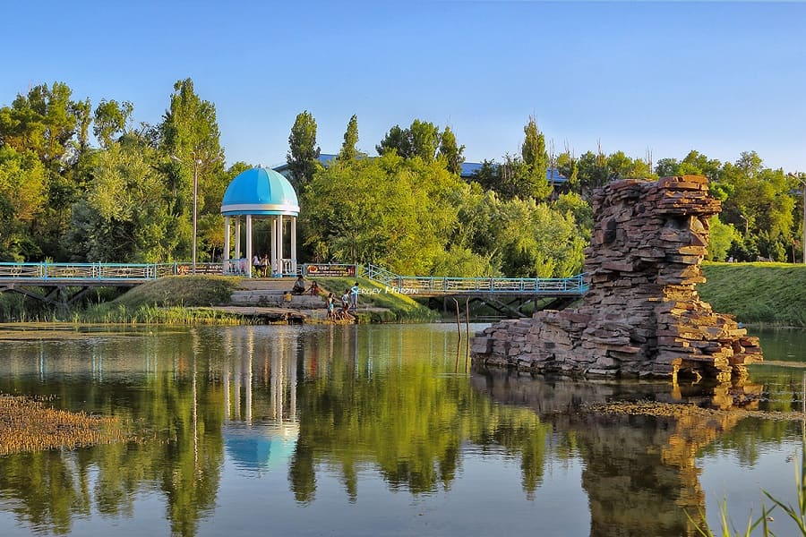

A modern leisure park and green zone in central Taraz
The Presidential Park in Taraz is a symbol of urban renewal and landscaping. It has become a favorite spot for residents of all ages thanks to its neat alleys, fountains, and nighttime illumination.
- Location: Close to the city center
- Area: Over 10 hectares
- Features: Architectural elements, benches, children's playgrounds
What’s interesting here?
- 🌳 Walking paths with decorative lighting
- ⛲ Fountains and green zones
- 🡠Recreation zones for kids and adults
- 📷 Great photo spots and places for walks
How to get there?
📠Taraz, Baizakov Street
🚖 Easily reachable by taxi or public transport from any district
Information
⏰ Open: 24/7
💰 Entry: Free
The Presidential Park is a blend of modern infrastructure and natural beauty, created for the comfort and enjoyment of Taraz residents and visitors alike.
PHOTO
